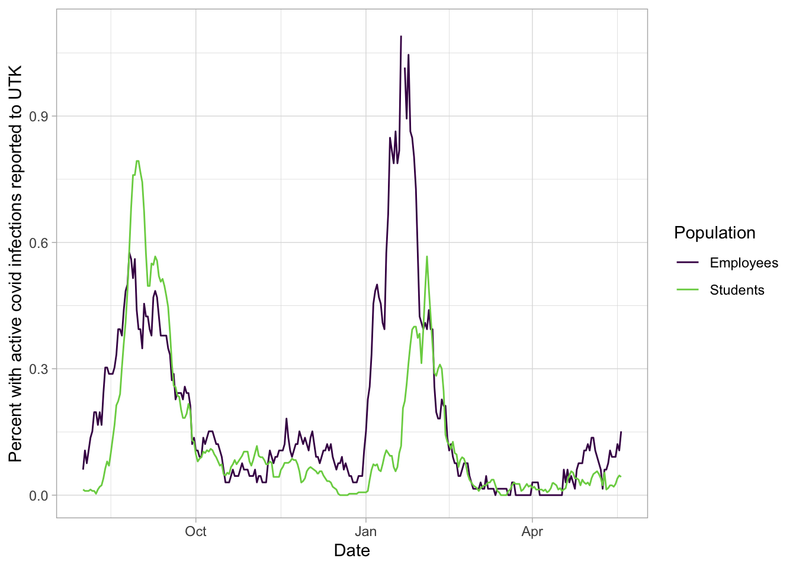
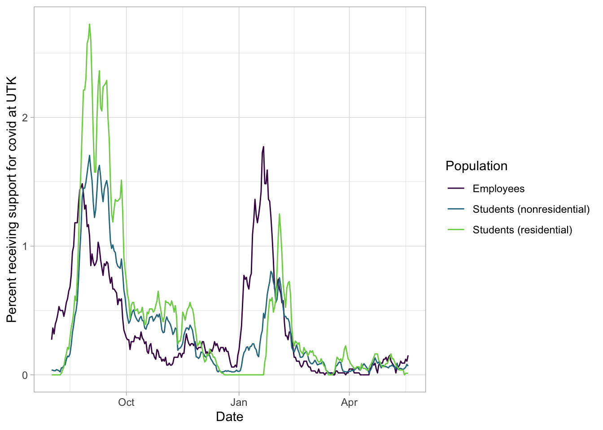

UTK 2021-2022 academic year
Official information about covid at UTK available at https://www.utk.edu/coronavirus/guides/data-monitoring-and-contingency-options. CDC guidance for institutions of higher education who don’t require vaccination, which includes UTK, is here. There are also CDC recommendations for everywhere, not just higher education: Knox County is currently an area with substantial to high covid spread, so the CDC recommendation is that everyone wear masks indoors, even those fully vaccinated. Some of the other dashboards other the the one below:
- UTK’s Covid Dashboard. Updated weekdays
- UT System Dashboard. Updated daily, with a potential for filtering by campus
- Alex Zukowski Dashboard. Created by a UTK student.
- Matthew Martin Dashboard. Created by another UTK student.
UTK is releasing some data, though less than some peers or UTK itself last academic year. I cannot find information on number of tests at the student health center, test positivity rate, saliva testing, or wastewater testing. There is no data on vaccination rate in the student body in general or in faculty or staff, nor on hospitalization or death rates. Students in university housing, and their close contacts who are unvaccinated, may have to seek alternate places to live at their own cost if they test positive for covid until the self-isolation period is over.
The first plot shows the percentage of students and employees with active covid cases known to UTK at any one time. I am curious about the overall trend in each, as well as about which group has more reported cases at the moment. One guess could be that covid proportion might be higher among students (high density housing, generally lower vaccination rate for younger populations), but they might get tested at lower rates. Approximate total population size in each group comes from the Chancellor’s update of Aug. 19, 2021.
Note that UTK’s data is released here, but it requires manual download; I am taking advantage of Alex Zukowski’s website to get that compilation of the data. Citation: Zukowski, Taylor A. “University of Tennessee, Knoxville COVID-19 Dataset.” COVID-19 in The University of Tennessee, Knoxville, 2020, sites.google.com/view/utk-covid19/data

There is also data on those who have reported that they are self-isolating due to having covid (isolation) or being exposed (quarantine).

There is a separate dataset from the state on cases of people age 17 to 25 in Knox County. This may include UTK student data (it is unclear what the address used is for students being tested). Note that here I’m plotting all the new cases in UTK, not just those by students: new cases are not being separated out by population. However, the vast majority of UTK cases are in the student body.

From Aug. 2, 2021, to August 22, 2021, UT’s policy was for masks to be worn in classrooms, labs, and during indoor mandatory training events. Spaces like hallways, dining halls, elevators, and libraries were not included in this requirement, in contrast to the CDC’s recommendations in order to protect others and themselves by wearing masks in all indoor spaces. On Aug. 23, 2021, UT instituted a mask mandate in all indoor spaces except for private indoor spaces, dining, and other limited exceptions. Unlike over 650 other colleges and universities, UTK has no vaccination mandate in general (there may be exceptions in particular areas, like nursing with high patient contact). According to an Aug. 2 notice by the Chancellor, the university will no longer be requesting saliva testing to track spread (though testing kits are available in the student health center). I do not know of data on vaccination rate at UTK; a rough estimate may come from LSU, which as of Aug. 2 had a 34% vaccination rate among students.